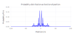
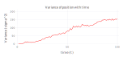

Quantum walk in Schrodinger representation
Noisy Hadamard Walk
This document is a continuation of the the introductory part on quantum walk. Here we try to introduce “noise” in the quantum walk and look at the time evolution of the walk. One way (but not the only way) to introduce noise is to bias' the ideal coin, that is, change the coin operator. For this, a random variable\(r\)’ is introduced which can take any values in the range \([0,1]\) (both inclusive). The new, more general “coin” operator is represented as:
\[ \begin{equation} \hat{w} = \left[ \begin{array}{cc} r & \sqrt{1 - r^{2}} \\ \sqrt{1 - r^{2}} & -r \\ \end{array} \right] \end{equation} \]
It can be seen that the Hadamard matrix \(\hat{w_{0}}\) is special case of the noisy Hadamard operator \(\hat{w}\) shown above, for \(r = \frac{1}{\sqrt{2}}\). Also, other important matrices can be thought of special cases of the matrix \(\hat{w}\) for various values of \(r\); for example:
\[ \begin{equation} \hat{w}(r=0) = \left[ \begin{array}{cc} 0 & 1 \\ 1 & 0 \\ \end{array} \right] \equiv \sigma_{x} \mbox{ , & } \hat{w}(r=1) = \left[ \begin{array}{cc} 1 & 0 \\ 0 & -1 \\ \end{array} \right] \equiv \sigma_{z} \end{equation} \]
The action of the noisy Hadamard operator on the basis states in computational basis is given by: \[\begin{eqnarray} \label{eq:noisy-H-action} \hat{w} \mid\! \uparrow\rangle = r\mid\!\uparrow\rangle + \sqrt{1 - r^{2}} \mid\!\downarrow\rangle \equiv \left[ \begin{array}{c} r \\ \sqrt{1 - r^{2}} \end{array} \right] \\ \hat{w} \mid\! \downarrow\rangle = \sqrt{1 - r^{2}} \mid\!\uparrow\rangle - r \mid\!\downarrow\rangle \equiv \left[ \begin{array}{c} \sqrt{1 - r^{2}} \\ -r \end{array} \right] \end{eqnarray}\] Substitute these relations in the time evolution equation of the quantum walk with \(Q = \hat{T}\hat{U_{0}}\). The operator \(\hat{U_{0}}\) acts first, and its action is given by: \[\begin{eqnarray} \hat{U_{0}}\mid\! n\rangle \mid\!\uparrow\rangle = (\hat{I}\otimes \hat{w}(r)) \mid\! n\rangle \otimes \mid\!\uparrow\rangle \\ \hat{U_{0}}\mid\! n\rangle \mid\!\uparrow\rangle = [\hat{I}\mid\! n\rangle] \otimes [\hat{w}(r)\mid\!\uparrow\rangle] \end{eqnarray}\]The action of the Hadamard operator \(\hat{w}(r)\) is given by equation~, so that the above equation becomes \[ \begin{equation} \hat{U_{0}}\mid\! n\rangle \mid\!\uparrow\rangle = \mid\! n\rangle \otimes \{r\mid\!\uparrow\rangle + \sqrt{1 - r^{2}} \mid\! \downarrow\rangle\} \end{equation} \]
Instead, if the initial state of the walker is \(\mid\! n\rangle \mid\!\downarrow\rangle\), the resulting state after the operator \(U_{0}\) acts becomes: \[ \begin{equation} \hat{U_{0}}\mid\! n\rangle \mid\!\downarrow\rangle = \mid\! n\rangle \otimes \{\sqrt{1 - r^{2}}\mid\!\uparrow\rangle - r\mid\!\downarrow\rangle \} \end{equation} \]
Now the translation operator \(\hat{T}\) acts on the resulting state \(\hat{U_{0}}\mid\!n\rangle\mid\!s\rangle\) (where \(s = \uparrow\) or \(\downarrow\)) to complete one step of time evolution. The state of the walker at the next time step would be: \[ \begin{equation} \mid\! \psi(t+1)\rangle = \hat{T} \left[ \displaystyle \sum\limits_{n = -\infty}^{\infty} a_{n,\uparrow}(t)\mid\! n\rangle \left( r \mid\!\uparrow\rangle + \sqrt{1 - r^{2}} \mid\!\downarrow\rangle \right) \\ {} + \displaystyle \sum\limits_{n = -\infty}^{\infty} a_{n,\downarrow}(t)\mid\! n\rangle \left(\sqrt{1 - r^{2}} \mid\!\uparrow\rangle - r \mid\!\downarrow\rangle \right) \right] \end{equation} \]
Now using the properties of time-evolution operator \(\hat{T}\) described in~, the above equation becomes: \[ \begin{equation} \mid\! \psi(t+1)\rangle = \displaystyle \sum\limits_{n = -\infty}^{\infty} \left[ a_{n,\uparrow}(t) \left( r\mid\! n+1\rangle \mid\!\uparrow\rangle + \sqrt{1 - r^{2}} \mid\! n-1\rangle \mid\!\downarrow\rangle \right) + a_{n,\downarrow}(t) \left( \sqrt{1 - r^{2}} \mid\! n+1\rangle \mid\!\uparrow\rangle - r \mid\! n-1\rangle \mid\!\downarrow\rangle \right) \right] \end{equation} \]
and rearranging the terms in a summation of single infinite series in terms of the corresponding state vectors: \[ \begin{align} \mid\! \psi(t+1)\rangle = \displaystyle \sum\limits_{n = -\infty}^{\infty} \left[ \left( a_{n,\uparrow}(t) r + a_{n,\downarrow}(t) \sqrt{1 - r^{2}} \right) \mid\! n+1\rangle \mid\!\uparrow\rangle \\ {} + \left( a_{n,\uparrow}(t) \sqrt{1 - r^{2}} - a_{n,\downarrow}(t) r \right) \mid\! n-1\rangle \mid\!\downarrow\rangle \right] \end{align} \]
To find out the relations between various coefficients \(a_{n,\uparrow}\) and \(a_{n,\downarrow}\), the above equation needs to be rewritten. Since the state vector is the sum of an infinite series, \(\mid\! n+1\rangle\) can be rewplaced with \(\mid\!n\rangle\) and replace \(a_{x}\) with \(a_{x-1}\) in the corresponding coefficient term. This amounts to ‘adjusting the window’ to look at the term one step to the left. Similarly, replace the coefficients \(a_{n}\) with \(a_{n+1}\) and \(\mid\! n-1\rangle\) with \(\mid\! n\rangle\) in the second set of brackets, looking at one term to the right in the infinite sum. The resulting equation can be rewritten as: \[ \begin{align} \mid\! \psi(t+1)\rangle = \displaystyle \sum\limits_{n = -\infty}^{\infty} \left[ \left( a_{n-1,\uparrow}(t)r + a_{n-1,\downarrow}(t) \sqrt{1 - r^{2}} \right) \mid\! n\rangle \mid\!\uparrow\rangle \\ {} + \left( a_{n+1,\uparrow}(t) \sqrt{1 - r^{2}} - a_{n+1,\downarrow}(t)r \right) \mid\! n\rangle \mid\!\downarrow\rangle \right] \end{align} \]
These terms in parentheses are the coefficients of state vectors at time \((t+1)\) i.e. \(a_{n,\uparrow}(t+1)\) and \(a_{n,\downarrow}(t+1)\). Comparing the coefficients of basis vectors in the above equation to those in the time evolution equation, the following recursive relations are obtained:
\[ \begin{eqnarray}\label{eq:noisy-coeff} a_{n, \uparrow}(t + 1) = a_{n-1, \uparrow}(t).r + a_{n-1, \downarrow}(t).\sqrt{1 - r^{2}} \\ a_{n, \downarrow}(t + 1) = a_{n+1, \uparrow}(t).\sqrt{1 - r^{2}} - a_{n+1, \downarrow}(t).r \end{eqnarray} \]
Probability distribution
Similar to the ‘ideal’ quantum walk described here, we are interested in two quantities, the position space probability distribution \(P_{t}(n)\) as a function of the position \(n\), and the variance \(\sigma^{2}(t)\) as a fucntion of time \(t\). We can allow the range of the random variable \(r\) to be any subset of [0, 1].
For illustration, we have allowed \(r\) to take any possible value in the range (\(0 \le r \le 1\)). The following Figure-1 shows the probability distribution of the noisy quantum walk: 
And the following Figure-2 shows the variance \(\sigma^{2}(t)\) as a fucntion of time \(t\): 
It can be seen clearly that as the “noise” in the coin operator increases, the probability distribution curve approaches a Gaussian, and the variance \(\sigma^{2} \propto t\), resembling the classical random walk.
Further work
Although the above time evolution approach shows the properties of discrete quantum walk and allows us to introduce different models of noise, it is computationally intensive, and any numerical simulation above a few hundred steps (and averaged over several iterations) takes several hours (or days). Hence one other approach is to cast the problem in terms of quantum operators or Kraus operators acting on density matrices, which is decsribed in this post (work in progress).
Note: If you can’t see the equations, please wait for a few seconds and check your internet connection. This site uses the cloud version of MathJax, and it may take time to render on slow connetions. If you still see errors in rendering, please let me know.